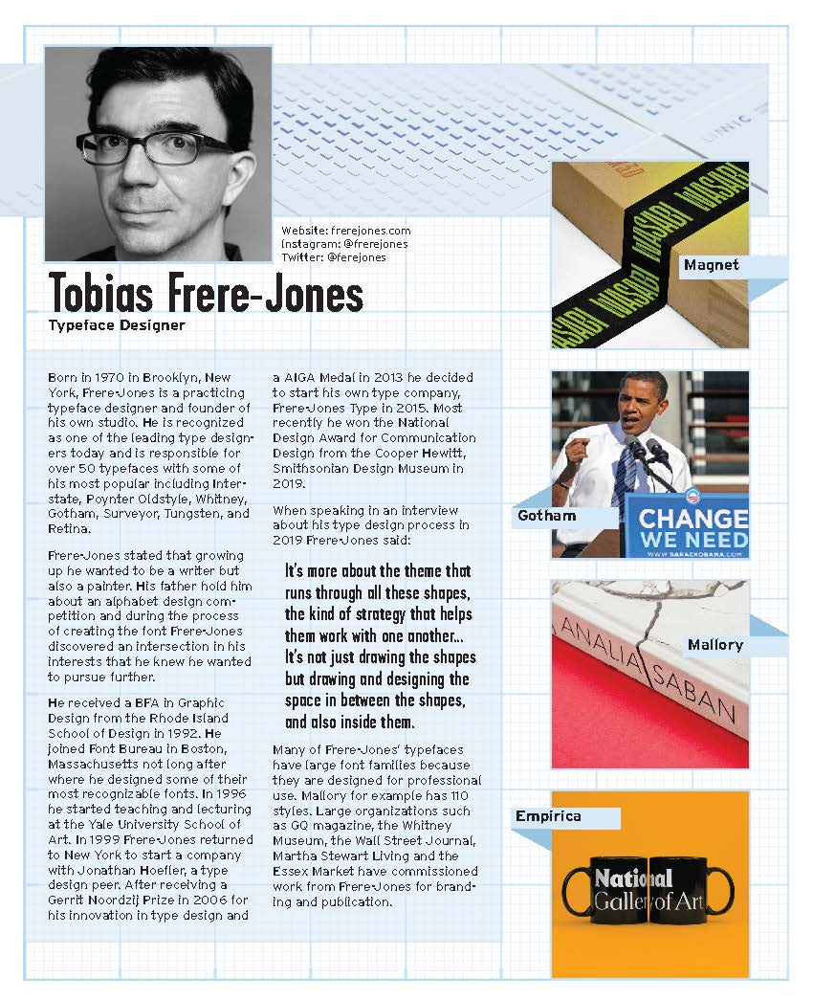

About Me
I was born in Phoenix, Arizona in 1999 and grew up traveling the world with my diplomat mother and artist father. First moving to Kuwait in 2003 where my sister was born. We then moved to Prauge, Czech Republic, Washington D.C., U.S.A, Gabarone, Botswana, Pretoria, South Africa, and Nairobi, Kenya. I would go on to persue Studio Art at Western Washington University in Bellingham, Washington, U.S.A. However, I was not happy with my major and I saw the pandemic as an oppertunity to change my career path. I decided to move back in with my parents who were in Rome, Italy at the time. While working and taking some online classes, I decided to start learning graphic design. My mom was assigned to Ottawa, Canada in 2021 where I discovered Algonquin College and decided to apply. I am now an International graphic design student and am looking forward to the new oppertunities ahead of me.
My Work
